Nota: El motor está en la carrera de escape de punto muerto superior cronometrada.
- Asegúrese de que la muesca del árbol de levas de admisión está en la posición de las 5 horas (2) y la muesca del árbol de levas de escape está en la posición de las 7 horas (1). El pistón número 1 debería estar en el punto muerto superior, la llave del cigüeñal a las 12 horas.
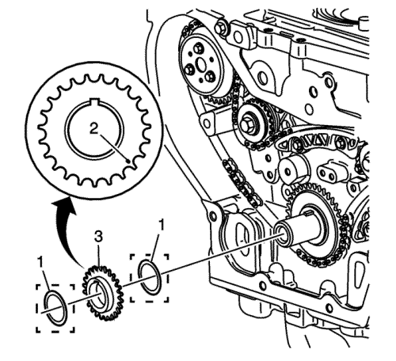
- Monte una arandela de tope (1), si se incluye en el suministro.
- Monte el piñón de accionamiento de la cadena de distribución (3) en el cigüeñal con la marca de distribución (2) en la posición de las 5 horas y la parte delantera del piñón dirigida hacia fuera.
- Monte una segunda arandela de tope (1), si se incluye en el suministro.

Nota: Hay dos posibles configuraciones de cadena para el motor. Ambas configuraciones utiizan un eslabón de cadena único para alinearse con la marca de sincronización del actualdor del árbol de levas de admisión. El primer diseño utiliza un color de eslabón único (1). El segundo diseño utiliza un eslabón anodizado negro (3) con eslabones de colores únicos para cada lado (2).
- Oriente la cadena de tal manera que los retentores de colores se puedan ver.
- Determine la configuración de la cadena de distribución.
- Para el 1er diseño de la cadena de distribución, monte el actuador de árbol de levas de admisión en la cadena de distribución con la marca de distribución alineada con el único retentor coloreado (1).
- Para el segundo diseño de la cadena de distribución, monte el actuador del árbol de levas de admisión en la cadena de distribución con la marca de sincronización alineada con el eslabón de distribución anodizado en negro (3) con eslabones de colores únicos a cada lado (2).

- Baje la cadena de distribución a través de la abertura de la culata. Proceda con cuidado para garantizar que la cadena pasa alrededor de los dos lados de los tetones (1, 2) del bloque motor.
- Monte el actuador del árbol de levas de admisión en el árbol de levas de admisión alineando el pasador de ajuste en la ranura del árbol de levas.
Nota: Utilice siempre pernos actuadores NUEVOS.
- Apriete a mano el perno nuevo del actuador del árbol de levas de admisión.
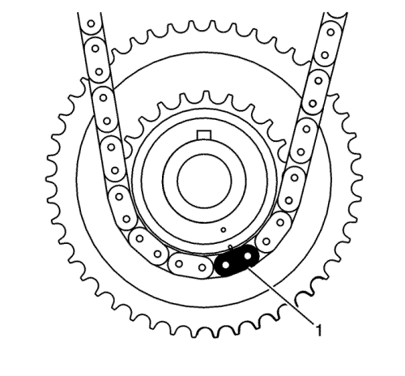
- Guíe la cadena de distribución alrededor del pistón del cigüeñal y alinee el eslabón coloreado (1)con la marca de distribución del piñón del cigüeñal aproximadamente en la posición de las 5 horas.
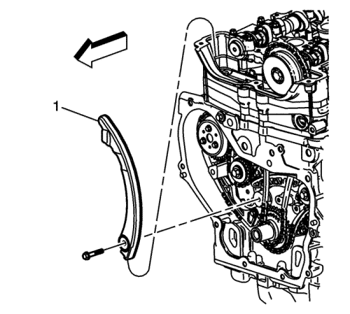
- Gire el cigüeñal en sentido horario para tensar la cadena. No gire el árbol de levas de admisión.
Precaución: Consulte Precaución con las fijaciones en la sección Prólogo
- Monte la guía ajustable de la cadena de distribución (1) a través de la abertura en la culata y monte el perno de cadena de distribución regulable y apriétela a 10 N·m (89 lib. pulg.).
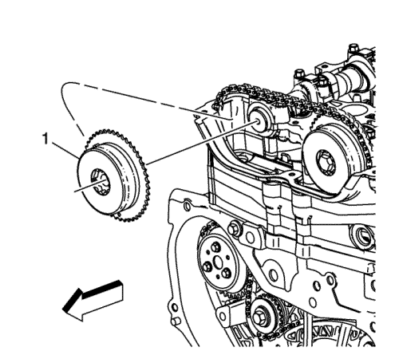
- Monte el actuador de árbol de levas de escape (1) en la cadena de distribución con la marca de distribución alineada con el segundo retentor coloreado.
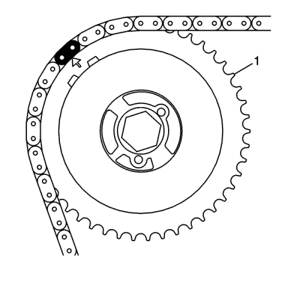
Nota: Utilice siempre pernos de actuador NUEVOS.
- Monte el actuador del árbol de levas de escape (1) en el árbol de levas de escape alineando el pasador de ajuste en la ranura del árbol de levas.
- Con una llave fija de 23-24 mm, gire el árbol de levas de escape en sentido de las agujas del reloj hasta que el pasador de ajuste en el actuador del árbol de levas entre en la ranura del árbol de levas.
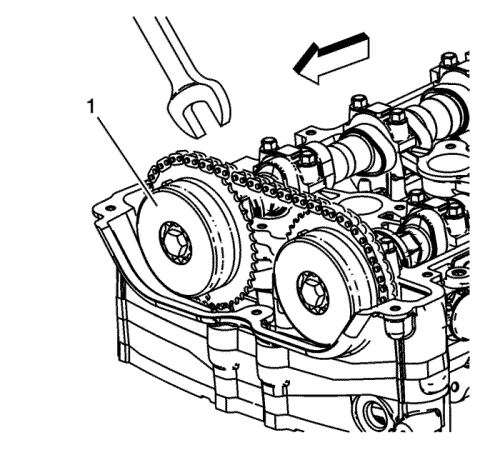
- Cuando el actuador (1) se asiente en la leva, apriete con la mano el nuevo perno de actuador de árbol de levas de escape.
- Verifique que todos los eslabones coloreados y marcas de distribución correspondientes siguen alineados. Si no lo estuvieran, repita la parte del procedimiento necesaria para alinear las marcas de distribución.
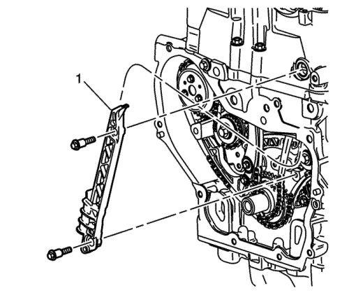
- Monte la guía fija (1) de la cadena de distribución con sus tornillos y apriete hasta 12 N·m (106 lib. pulg.).
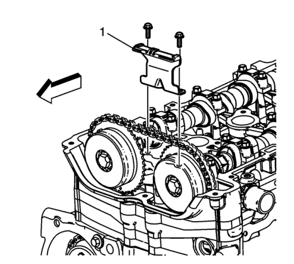
- Monte la guía superior (1) de la cadena de distribución con sus tornillos y apriete hasta 10 N·m (89 lib. pulg.).

- Siga estos pasos para reajustar el tensor de la cadena de distribución:
| 22.1. | Retire el anillo de seguridad. |
| 22.2. | Extraiga el conjunto de pistón del cuerpo del tensor de la cadena de distribución. |
| 22.3. | Monte el dispositivo tensor EN-45027-2 (2) en un tornillo de banco. |
| 22.4. | Monte el extremo de la muesca en el conjunto del pistón en el dispositivo tensor EN-45027-2 (2). |
| 22.5. | Con el dispositivo tensor EN-45027-1 (1), gire el cilindro de la carraca en el pistón. |
| 22.6. | Vuelva a montar el conjunto de pistón en el cuerpo del dispositivo tensor. |
| 22.7. | Monte el anillo elástico. |
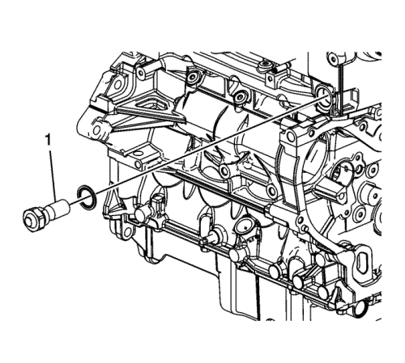
- Compruebe si la junta del tensor de la cadena de distribución está dañada. Si lo está, sustituya la junta.
- Compruebe que se haya eliminado cualquier resto de suciedad del orificio roscado del tensor de la cadena de distribución en la culata.
Nota: Asegúrese de que la junta de tensor de cadena de distribución se ha centrado mediante el procedimiento de par de apriete para eliminar la posibilidad de una fuga de aceite.
- Monte el conjunto del dispositivo tensor de la cadena de distribución (1) y apriete hasta 75 N·m (55 lib. pie).
Nota: El tensor de cadena de distribución se libera comprimiéndolo 2 mm (0,079 pulg.), lo que libera el mecanismo de bloqueo en la carraca.
- Debe montarse el compensador del cigüeñal para liberar el dispositivo tensor. Consultar Montaje del balancín del cigüeñal .
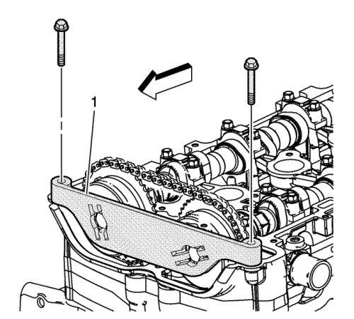
- Monte la herramienta de bloqueo EN-48953 (1) y apriete los tornillos en la culata hasta 10 N·m (89 lib. pulg.).
- Utilizando una llave dinamométrica, apriete el tornillo del actuador del árbol de levas de admisión hasta 30 N·m (22 lib. pie) más 100 grados utilizando el medidor EN 45059.
- Utilizando una llave dinamométrica, apriete el tornillo del actuador del árbol de levas de escape hasta 30 N·m (22 lib. pie) más 100 grados utilizando el medidor EN 45059.
- Extraiga la herramienta de bloqueo EN-48953.
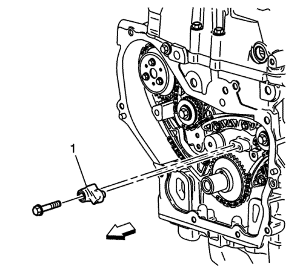
- Monte el difusor (1) de engrase de la cadena de distribución y apriete el tornillo a 10 N·m (89 lib. pulg.).
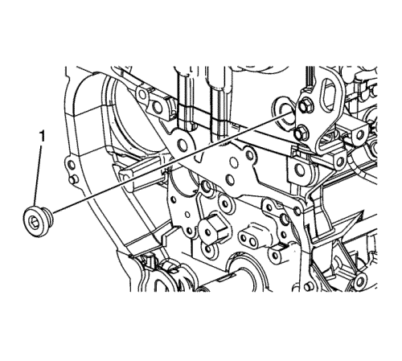
- Aplique sellante a la rosca del tapón del orificio de acceso del perno de guía de cadena de distribución. Consultar Adhesivos, líquidos, lubricantes y selladores .
- Monte el tapón de orificio de acceso del tornillo de guía de cadena de distribución (1) y apriételo hasta 90 N·m (66 lib. pie).